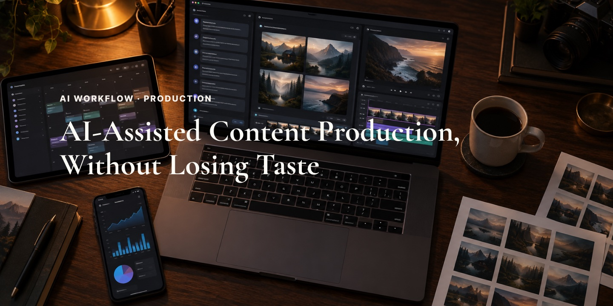
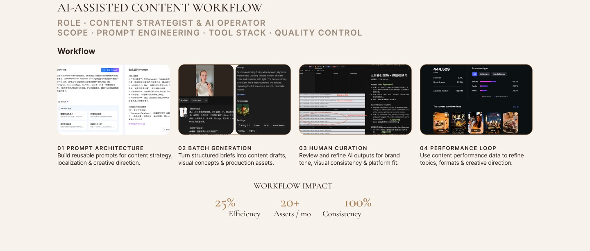
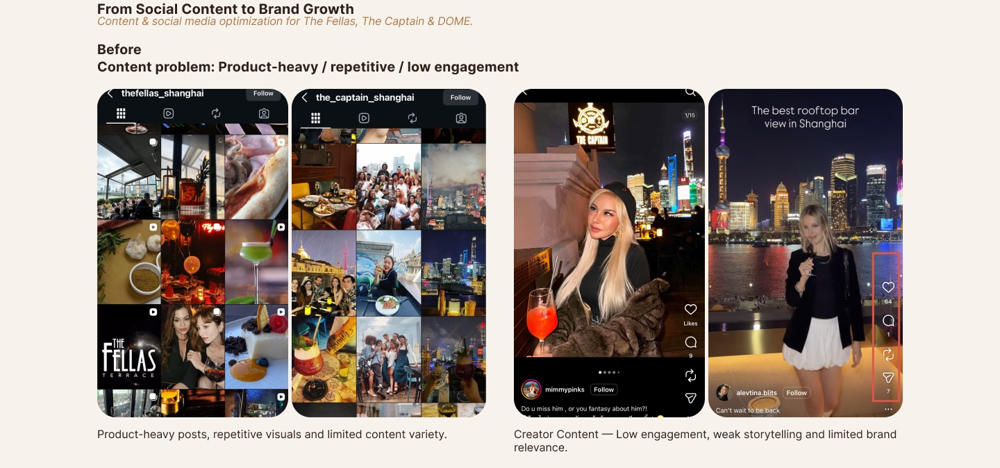
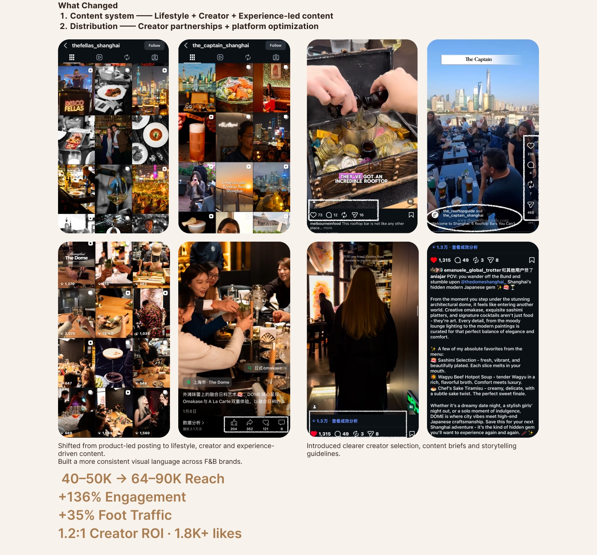

The Brief
Built repeatable AI pipelines for content production, creator marketing, and user journey optimization.



Let's discuss how we can build high-impact creative pipelines and lean validation frameworks for your next product launch.